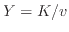
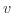
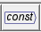
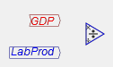
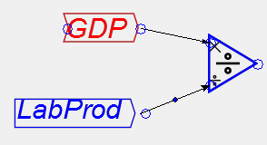
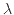
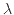
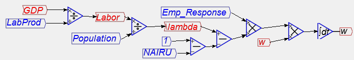
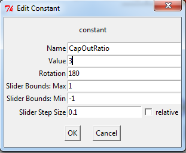

In 1965, Richard Goodwin, the great pioneer of complexity in economics, presented the paper ``A Growth Cycle'' to the First World Congress of the Econometric Society in Rome. It was later published in a book collection (Goodwin, Richard M. 1967. "A Growth Cycle," in C. H. Feinstein, Socialism, Capitalism and Economic Growth. Cambridge: Cambridge University Press, pp. 54-58.); to my knowledge it was never published in a journal.
Goodwin's model has been subjected to much critical literature about implying stable cycles, not matching empirical data, etc., but Goodwin himself emphasized that it was a ``starkly schematized and hence quite unrealistic model of cycles in growth rates". He argued however that it was a better foundation for a more realistic model that "the more usual treatment of growth theory or of cycle theory, separately or in combination.''
Goodwin emphasized the similarity of this model to the Lokta-Volterra model of interacting predator and prey, which can make it seem as if it was derived by analogy to the biological model. But in fact it can easily be derived from a highly simplified causal chain:

His linear approximation was:
Goodwin published the model as a reduced form equation in the two system states the employment rate () and the workers' share of output ():

This form is useful for analytic reasons, but it obscures the causal
chain that actually lies behind the model. With modern system dynamic
software, this can be laid out explicitly, and we can also use much
more meaningful names. We'll start with defining output (which is a
variable). Click on  on the Icon Palette, or click on the Operations
menu and choose ``Variable''. This will open up the ``Specify Variable
Name'' window:
on the Icon Palette, or click on the Operations
menu and choose ``Variable''. This will open up the ``Specify Variable
Name'' window:

Enter ``GDP'' into the ``Name'' field, and leave the other fields blank--since GDP is a variable and we're defining a dynamic system, the value of GDP at any particular point in time will depend on the other entities in the model. Now Click OK (or press ``Enter''). The variable will now appear, attached to the cursor. Move to a point near the top of the screen and click, which will place the variable at that location:

We are now going to write the first part of the model, that Labor (Labor) equals output (GDP) divided by labor productivity (LabProd). Just for the sake of illustration, we'll make a a constant (this can easily be modified later). For this we need to add a constant by clicking on  on the Palette, or by choosing Operations/constant from the menu. This will pop-up the Edit Constant window:

Give the variable the name ``LabProd'' and the value of 1 (i.e., one unit of output per worker). Click OK or press Enter and the constant will now be attached to the cursor. Place it below GDP:
Now we need to divide GDP by LabProd. Click on the
 symbol on the palette and the symbol will
be attached to the cursor. Drag it near the other two objects and
click. Your Canvas will now look something like this:
symbol on the palette and the symbol will
be attached to the cursor. Drag it near the other two objects and
click. Your Canvas will now look something like this:

Now to complete the equation, you have to attach GDP to the top of the divide block and LabProd to the bottom. Go to the Mode buttons and click on Wire:

Now move your cursor to the right hand side of and click, hold the mouse button down, and drag. An arrow will come out from . Drag this arrow to the top of the divide block (where you'll see a tiny multiply sign) and release the mouse. You should then see this:

The program will ``snap'' to the nearest object when you're in Wire mode, so this should be easy to do. But if you have any problems, go to the File menu and click on ``Show Ports''. You will then see little circles that identify the input and output ports on all objects:

Those are the connection points for wires, so start dragging from one and release on the other. Now wire LabProd to the bottom of the Divide block (where you'll see a miniature divide symbol (blown up below):

To complete the equation, click on ``Move'' in the Mode buttons:

Then click on  in the Design Icons to create a new variable, call it
Labor, place it the the right of the Divide block, change back to Wire
mode again, and wire the output port from the Divide block to the
input port for Labor:
in the Design Icons to create a new variable, call it
Labor, place it the the right of the Divide block, change back to Wire
mode again, and wire the output port from the Divide block to the
input port for Labor:

To show the correspondence between the flowchart above and a standard modeling equation, click on the File menu and choose ``Output LaTeX''. Give the file a suitable name (say ``Labor Equation'') and save it to disk. Then if you have a LATEX program, or if you know how to import LATEX equations into MathType, you will see that you have created the following equations:
If you don't have either LATEX, or MathType, you will see a text file with the following content:
\documentclass{article}
\begin{document}
\begin{eqnarray*}
\mathrm{GDP}&=&\\
\mathrm{Labor}&=&\frac{\mathrm{GDP}}{\mathrm{LabProd}}\\
\end{eqnarray*}
\end{document}
This is LATEX code, which is processed by a LATEX interpreter to produce beautifully formatted equations. A future release of Minsky will incorporate a LATEX processor, so that you will be able to see the equations within the program.
Now let's keep going with the model. With Labor defined, the employment rate will be Labor divided by Population. Define Population as a constant (we'll later change it to a variable), and give it a value of 110.

Add it to the Canvas and you are now ready to define the employment
rate--another variable. Click on  , give it
the name ``lambda'' (be sure to include the backslash symbol), put
another Divide block on the canvas, choose Wire mode and wire this
next part of the model up. You should now have:
, give it
the name ``lambda'' (be sure to include the backslash symbol), put
another Divide block on the canvas, choose Wire mode and wire this
next part of the model up. You should now have:

Now choose ``File>Output Latex'' again, give it an appropriate name (say ``EmploymentEquation''), and load this into your LaTeX processor. You will see
Notice that Minsky outputs a Greek in the equation. In a later release, we'll allow the inputing of Greek and other symbols directly--for now, this is our workaround.
With the employment rate defined, we are now ready to define a ``Phillips Curve'' relationship between the level of employment and the rate of change of wages. There was far more to Phillips than this (he actually tried to introduce economists to system dynamics back in the 1950s), and far more to his employment-wage change relation too, and he insisted that the relationship was nonlinear (as in Goodwin's figure above). But again for simplicity we'll define a linear relationship between employment and the rate of change of wages.
Here we need to manipulate the basic linear equation that Goodwin used:
Firstly multiply both sides by :
Then integrate both sides (because integration is a numerically much more stable process than differentiation, all system dynamics programs use integration rather than differentiation):
In English, this says that the wage now is the initial wage plus the
integral of the wage multiplied by its rate of change function. That's
what we now need to add to the Canvas, and the first step is to spell
out the wage change function itself. Firstly, since we're using a
linear wage response function, the rate of employment has to be
referenced to a rate of employment at which the rate of changes is
zero. I suggest using Milton Friedman's concept of a
``Non-Accelerating-Inflation-Rate-of-Unemployment'', or NAIRU. We need
to define this constant, subtract it from 1, and subtract the result
from the actual employment rate . To enter 1, click on  , define a
constant called 1, and give it a value of 1 (we'll have a more elegant
way of doing this in a later release). Then define another constant
NAIRU, and give it a value of 0.05 (5% unemployment). Subtract this
from 1 and subtract the result from . You should have the following:
, define a
constant called 1, and give it a value of 1 (we'll have a more elegant
way of doing this in a later release). Then define another constant
NAIRU, and give it a value of 0.05 (5% unemployment). Subtract this
from 1 and subtract the result from . You should have the following:

Now we need to multiply this gap between the actual employment rate and the ``NAIRE'' rate by a constant that represents the response of wages to this gap. Let's call this constant Emp_Response (remember to include the underscore). Define the constant, give it a value of 10, and multiply ( minus NAIRE) by it:

Now we are ready to add a crucial component of a dynamic model: the
integral block, which takes a flow as its input and has the integral
of that flow as the output. The wage rate w is such a variable, and we
define it by clicking on the  symbol in the Icon Palette (or by
choosing Operations/Integrate from the menu). This then attaches the
following block to the cursor:
symbol in the Icon Palette (or by
choosing Operations/Integrate from the menu). This then attaches the
following block to the cursor:

Now we need to rename this from the default name of ``int'' to ``w'' for the wage rate. Either right click or double-click on ``int'' and this will bring up the edit window . Rename it to ``w'' and give it a value of 1:

To compete the integral equation, we need to multiply the linear employment response function by the current wage before we integrate it (see the last equation above). There are two ways to do this. First, place a multiply block between the wage change function and the integral block, wire the function up to one input on the multiply block, and then either:
The first method gives you this initial result:

That looks messy, but notice the blue dot on the wire? Click and drag on that and you will turn the straight line connector into a curve:

The second approach, which I personally prefer (it's neater, and it precisely emulates the integral equation), yields this result:

From this point on the model develops easily--``like money for old rope'', as one of my maths lecturers used to say. Firstly if we multiply the wage rate w by Labor we get the Wage Bill. To do this, firstly create the variable Wage Bill, and put will well below where w currently is on your diagram:

Now right-click on WageBill and choose ``Flip''. This rotates the block through 180 degrees (any arbitrary rotation can be applied from the variable definition window itself). Now right-click on Labor, which you've already defined some time ago, and choose ``Copy''. Place the copy of Labor to the right of WageBill:

Now insert a multiply block before WageBill, and wire w and Labor up to it. Curve the wire from w using the blue dots (you can do this multiple times to create a very curved path: each time you create a curve, another 2 curve points are added that you can also manipulate, as I have done below:

The next step is to subtract the WageBill from GDP to define Profits. Take a copy of GDP, insert it before WageBill, insert a subtract block, and wire it up to define the variable Profits:

In the simple Goodwin model, all Profits are invested, and investment
of course is the rate of change of the capital stock Capital. Create a
variable called Investment, wire this up to Profits, and then create a
new integral variable Capital using the  icon. Right-click or double-click on to rename int2 to Capital, and
give it an initial value of 300:
icon. Right-click or double-click on to rename int2 to Capital, and
give it an initial value of 300:

Wire this up to Investment:

Now there's only one step left to complete the model: define a constant CapOutputRatio and give it a value of 3:

Divide Capital by this, and wire the result up to the input on GDP. You have now built your first dynamic model in Minsky:
Before you attempt to run it, do two things. Firstly from the Runge Kutta menu item, change the Max Step Size to 0.01--to get a smoother simulation.

Secondly, add some graphs by clicking on the
 icon, placing the graph
in the middle of the flowchart, and wiring up lambda and w to two of
the four inputs on the left hand side. You will now see that, rather
than reaching equilibrium, the model cycles constantly:
icon, placing the graph
in the middle of the flowchart, and wiring up lambda and w to two of
the four inputs on the left hand side. You will now see that, rather
than reaching equilibrium, the model cycles constantly:

If you choose File/Output LaTeX and load the file into a LaTeX processor, you will see that you have defined the following system of equations:
At this level of complexity, the equation form--if you're accustomed to working in equations--is as accessible as the flowchart model from which it was generated. But at much higher levels of complexity, the flowchart is far easier to understand since it displays the causal links in the model clearly, and can be structured in sub-groups that focus on particular parts of the system.